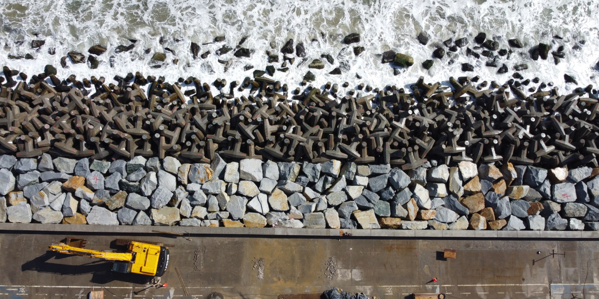
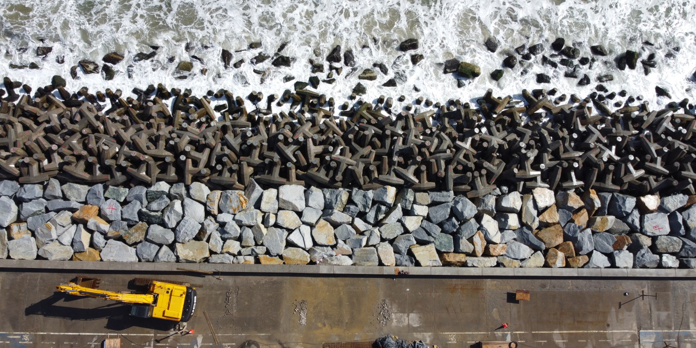

crafted with ❤️ - inspired by Tympanus
Welcome to my personal.site
I'm Jorge A. Arriagada Triana. Civil Engineer.
Instagram
LinkedIn
GitHub
Spotify
"...On the overwhelming majority of jobs no more than an approximate forecast is needed, and if such a forecast cannot be made by simple means it cannot be made at all" - Dr. Karl Von Terzaghi


Velocity
Incredible as this seems to our ordinary ideas, it is undoubtedly an understatement rather than an exaggeration of the true proportion as observed in the case of koilon.
+ Read the story


 

Projectiles
Incredible as this seems to our ordinary ideas, it is undoubtedly an understatement rather than an exaggeration of the true proportion as observed in the case of koilon.
+ Read the story
Gravity
Incredible as this seems to our ordinary ideas, it is undoubtedly an understatement rather than an exaggeration of the true proportion as observed in the case of koilon.
+ Read the story
Quasimodo
Incredible as this seems to our ordinary ideas, it is undoubtedly an understatement rather than an exaggeration of the true proportion as observed in the case of koilon.
+ Read the story
Hyperbolic
Incredible as this seems to our ordinary ideas, it is undoubtedly an understatement rather than an exaggeration of the true proportion as observed in the case of koilon.
+ Read the story
Ganymede
Incredible as this seems to our ordinary ideas, it is undoubtedly an understatement rather than an exaggeration of the true proportion as observed in the case of koilon.
+ Read the story